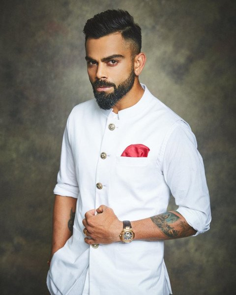

Virat Kohli
I'm Virat Kohli, an Indian cricketer. I was born in Delhi, India on November 5, 1988. I'm the first player in ICC cricket history to win all 3 ICC awards in a single year- ICC ODI player of the year, ICC Test player of the year and ICC Player of the year award in 2018. I rated as one of the best batsmen in the world. I captained India Under-19s to victory at the 2008 Under-19 World Cup in Malaysia. After a few months later, I made my ODI debut for India against Sri Lanka at the age of 19. Initially having played as a reserve batsman in the Indian team, I soon established himself as a regular in the ODI middle-order and was part of the squad that won the 2011 World Cup.
I also became the greatest Indian captain in Test cricket with 27 test wins, 12 overseas test wins and highest winning percentage as captain in both Tests and ODIs. Kohli was ranked eighth in ESPN's list of world's most famous sportspeople in 2016. I'm the only current player to have a stand named after him in Delhi Firoz Shah Kotla stadium to honour his immaculate contributions to Indian cricket. I made my first-class debut for Delhi against Tamil Nadu in November 2006, at the age of 18, and scored 10 in his debut innings. I came into the spotlight in December when he decided to play for my team against Karnataka on the day after my father's death and went on to score 90. I went directly to the funeral after he was dismissed. Delhi captain Mithun Manhas said, "That is an act of great commitment to the team and his innings turned out to be crucial," while coach Chetan Chauhan lauded Kohli's "attitude and determination. my mother noted that I'm changed a bit after that day. Overnight I became a much more matured person. I took every match seriously. I hated being on the bench. It's as if my life hinged totally on cricket after that day. Now, I looked like he was chasing his father's dream which was my own too.I scored a total of 257 runs from 6 matches at an average of 36.71 in that season.
In March 2008, I was bought on a youth contract by the Indian Premier League franchise Royal Challengers Bangalore for $30,000. I had an indifferent 2008 season, with a total of 165 runs in 12 innings at an average of 15.00 and a strike rate of 105.09. I fared slightly better in the second season in which he made a total of 246 runs at 22.36, striking at over 112, while his team made it as far as the final. In the 2010 season, I was the third highest run-getter for his team with 307 runs, averaging 27.90 and improving my strike rate to 144.81.